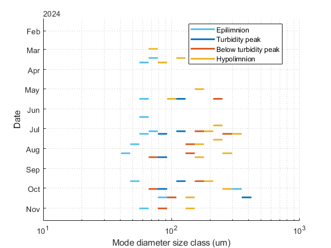

Contents
Workspace initialization
close all;
clear;
clc;
Read table
ModesTable = readtable(fullfile(extractBefore(pwd,'\00_Programs'),'Armelle','Results modes size distribution.xlsx'),"VariableNamingRule","modify");
Warning: Column headers from the file were modified to make them valid MATLAB
identifiers before creating variable names for the table. The original column
headers are saved in the VariableDescriptions property.
Set 'VariableNamingRule' to 'preserve' to use the original column headers as
table variable names.
Plot
figure(1)
hold on
set(gca, 'YDir', 'reverse');
xscale log
xlim([10 1000])
ylim("padded")
grid minor
xlabel('Mode diameter size class (um)')
ylabel('Date')
p1 = plot([ModesTable.Epilimion1 ModesTable.Epilimion2].',[ModesTable.AcquisitionDate ModesTable.AcquisitionDate].','LineStyle','-','Color',"#4DBEEE",'LineWidth',2);
p2 = plot([ModesTable.TP1 ModesTable.TP2].',[ModesTable.AcquisitionDate ModesTable.AcquisitionDate].','LineStyle','-','Color',"#0072BD",'LineWidth',2);
p3 = plot([ModesTable.BelowTP1 ModesTable.BelowTP2].',[ModesTable.AcquisitionDate ModesTable.AcquisitionDate].','LineStyle','-','Color',"#D95319",'LineWidth',2);
p4 = plot([ModesTable.Hypolimnion1 ModesTable.Hypolimnion2].',[ModesTable.AcquisitionDate ModesTable.AcquisitionDate].','LineStyle','-','Color',"#EDB120",'LineWidth',2);
legend([p1(1),p2(2),p3(3),p4(4)],'Epilimnion','Turbidity peak','Below turbidity peak','Hypolimnion','Location','best')
